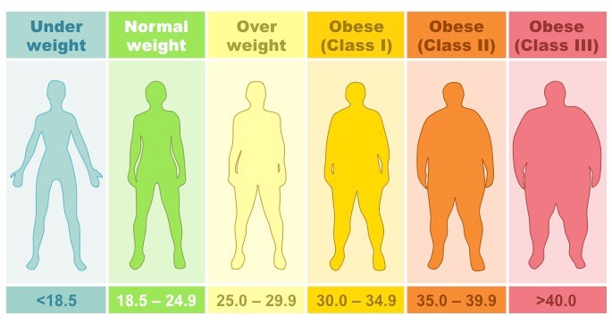

NEW
New improved BMI
Body Mass Index (BMI) is a number calculated from your weight and height which makes it an inexpensive and easy screening for weights that may lead to health problems. Go to the National Institutes of Health website for a BMI calculator.

Calculating BMI is easy, but figuring out what your BMI means is the hard part. First BMIs are not meant to be a stand-alone diagnostic tool. Assessing health at a particular weight for an individual requires evaluations of diet (undereating or overeating), physical activity, muscle development (high muscle density increases body weight), family history (genetics explain about 70% of body weight), and heart rate (too low body weight is associated with low heart rate), hormone status (too low body weight interferes with menses and lowers testosterone), blood pressure, and other health measures.
The US has adopted the World Health Organizations (WHO) BMI categories which I believe are set too low to be applied to most Americans. A number of researchers agree that the current NIH BMI weight categories for adults are problematic in many areas, particularly, if applied indiscriminately to ED patients. These BMI categories underestimate the presumed health consequences of lower weights and overestimate the presumed health consequences of higher weights. Recent studies of mortality rates in US find that people in the overweight and obese categories according to the standard BMI categories have lower mortality rates than have been previously estimated. In fact the lowest mortality rates are in the standard BMI “overweight” category (BMI 25–29.9). The standard categories below are sometimes helpful in evaluating weights of people of Asian descent.

Never willing to wait around until governments see the light, I have revised the standard BMI categories and added several new categories. My revisions are based on a thorough review of the literature and account for gender and musculature. (References on request.) I have used these revised BMI categories for over 15 years in clinical practice with great success. I defined a minimum safe weight as the lowest weight at which a person can maintain healthy function (including regular periods for women and normal testosterone levels for men), meet nutritional needs, and not engage in eating disordered behaviors and thinking.